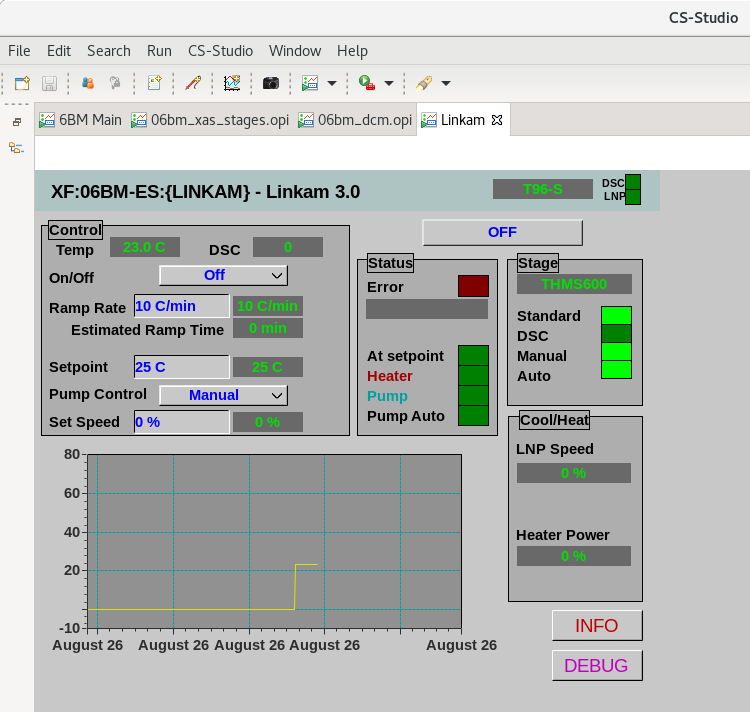

Linkam Stage
Linkam Stage¶
At BMM, we have a Linkam heating stage, Model THMS600. This is the device with a heater that goes up to 500C plus a liquid nitrogen cooling circuit to cool samples down to nearly 77K. This model comes with the T96 controller for which Jakub Wlodek recently wrote an IOC.
Our controller box has an RS-232 card in one of the back slots. We communicate to this via a Moxa terminal server with the IOC running on one of the beamline’s IOC servers..
Jakub also provided us with a CSS screen as an interface to the Linkam. Here’s what that looks like.
{kind=link}

Fig. 2 The CSS screen for the Linkam T96.¶
The plan at BMM is to incorporate this stage into our system for beamline automation. In short, the user will fill out a spreadsheet describing the sequence of the experiment. At a sequence of temperatures:
Move the stage to the indicated temperature
Measure XAFS at that temperature
Optionally change edge one or more times and measure XAFS at each edge and at the current temperature.
To make this happen, we need an Ophyd object.
Jakub has a handy tool that generates a bare-bones list of Ophyd object components from the PVs served by an IOC. Here’s what he provided:
1 init = Cpt(EpicsSignal, 'INIT')
2 model = Cpt(EpicsSignal, 'MODEL')
3 serial = Cpt(EpicsSignal, 'SERIAL')
4 stage_model = Cpt(EpicsSignal, 'STAGE:MODEL')
5 stage_serial = Cpt(EpicsSignal, 'STAGE:SERIAL')
6 firm_ver = Cpt(EpicsSignal, 'FIRM:VER')
7 hard_ver = Cpt(EpicsSignal, 'HARD:VER')
8 ctrllr_err = Cpt(EpicsSignal, 'CTRLLR:ERR')
9 config = Cpt(EpicsSignal, 'CONFIG')
10 status = Cpt(EpicsSignal, 'STATUS')
11 stage_config = Cpt(EpicsSignal, 'STAGE:CONFIG')
12 temp = Cpt(EpicsSignal, 'TEMP')
13 disable = Cpt(EpicsSignal, 'DISABLE')
14 dsc = Cpt(EpicsSignal, 'DSC')
15 startheat = Cpt(EpicsSignal, 'STARTHEAT')
16 ramprate_set = Cpt(EpicsSignal, 'RAMPRATE:SET')
17 ramprate = Cpt(EpicsSignal, 'RAMPRATE')
18 ramptime = Cpt(EpicsSignal, 'RAMPTIME')
19 holdtime_set = Cpt(EpicsSignal, 'HOLDTIME:SET')
20 holdtime = Cpt(EpicsSignal, 'HOLDTIME')
21 setpoint_set = Cpt(EpicsSignal, 'SETPOINT:SET')
22 setpoint = Cpt(EpicsSignal, 'SETPOINT')
23 power = Cpt(EpicsSignal, 'POWER')
24 lnp_speed = Cpt(EpicsSignal, 'LNP_SPEED')
25 lnp_mode_set = Cpt(EpicsSignal, 'LNP_MODE:SET')
26 lnp_speed_set = Cpt(EpicsSignal, 'LNP_SPEED:SET')
That’s obviously a good start. You see PVs for things like temperature readback at line 12, set point at lines 21 and 22, power output at line 23 … useful stuff.
Making a bare bones Ophyd object is dead simple. This functions and involves little more that wrapping the component list in a bit of boilerplate.
1 from ophyd import Device, Component as Cpt, EpicsSignal
2
3 class Linkam(PVPositioner):
4 '''A very simple ophyd wrapper around the Linkam T96 controller
5 '''
6
7 init = Cpt(EpicsSignal, 'INIT')
8 model = Cpt(EpicsSignal, 'MODEL')
9 serial = Cpt(EpicsSignal, 'SERIAL')
10 stage_model = Cpt(EpicsSignal, 'STAGE:MODEL')
11 stage_serial = Cpt(EpicsSignal, 'STAGE:SERIAL')
12 firm_ver = Cpt(EpicsSignal, 'FIRM:VER')
13 hard_ver = Cpt(EpicsSignal, 'HARD:VER')
14 ctrllr_err = Cpt(EpicsSignal, 'CTRLLR:ERR')
15 config = Cpt(EpicsSignal, 'CONFIG')
16 status = Cpt(EpicsSignal, 'STATUS')
17 stage_config = Cpt(EpicsSignal, 'STAGE:CONFIG')
18 temp = Cpt(EpicsSignal, 'TEMP')
19 disable = Cpt(EpicsSignal, 'DISABLE')
20 dsc = Cpt(EpicsSignal, 'DSC')
21 startheat = Cpt(EpicsSignal, 'STARTHEAT')
22 ramprate_set = Cpt(EpicsSignal, 'RAMPRATE:SET')
23 ramprate = Cpt(EpicsSignal, 'RAMPRATE')
24 ramptime = Cpt(EpicsSignal, 'RAMPTIME')
25 holdtime_set = Cpt(EpicsSignal, 'HOLDTIME:SET')
26 holdtime = Cpt(EpicsSignal, 'HOLDTIME')
27 setpoint_set = Cpt(EpicsSignal, 'SETPOINT:SET')
28 setpoint = Cpt(EpicsSignal, 'SETPOINT')
29 power = Cpt(EpicsSignal, 'POWER')
30 lnp_speed = Cpt(EpicsSignal, 'LNP_SPEED')
31 lnp_mode_set = Cpt(EpicsSignal, 'LNP_MODE:SET')
32 lnp_speed_set = Cpt(EpicsSignal, 'LNP_SPEED:SET')
33
34 linkam = Linkam('XF:06BM-ES:{LINKAM}:', name='linkam')
This works. You can set a set point with
linkam.setpoint_set.put(100)
and read the temperature with
linkam.temp.get()
There are, however, a number of shortcomings with this overly simple approach.
The signal that the stage has reached its temperature setpoint is buried in the bit sequence reported by the
statusattribute.Putting a temperature change in a bluesky plan is difficult with this object because it does not provide a way to block plan execution until the temperature is at the set point.
In this form, you cannot use the bluesky stub plan
mv()because there is no way to signal that the temperature change is done.The attributes
model,serial, and so on report information about the specific versions and serial numbers of the stage and controller. However, these PVs return lists of integers rather than human-readable strings.
All of these problems are solvable, but require a deeper dive into Ophyd. We will take that deeper dive in the next section.